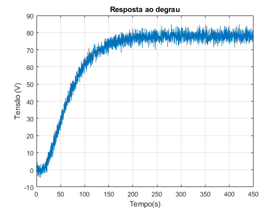
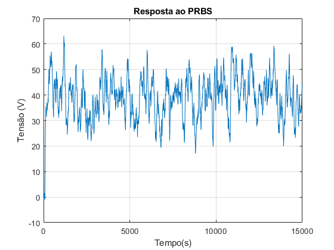
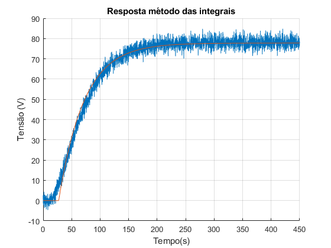
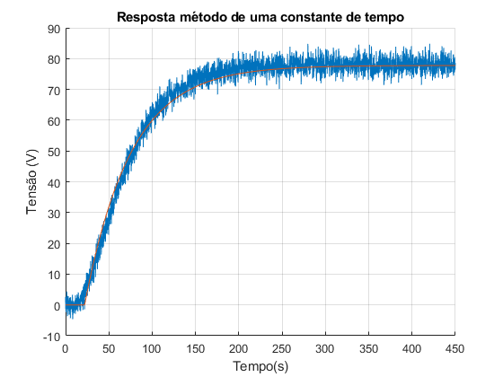
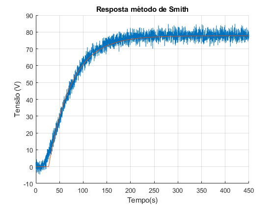
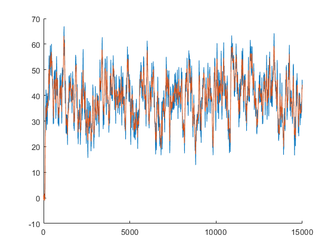
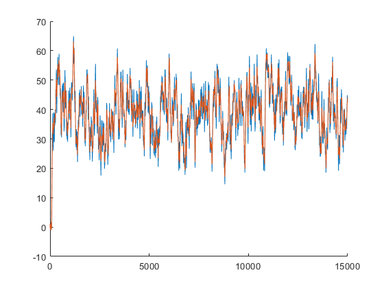
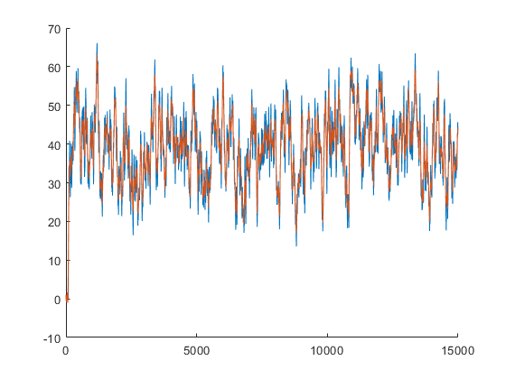
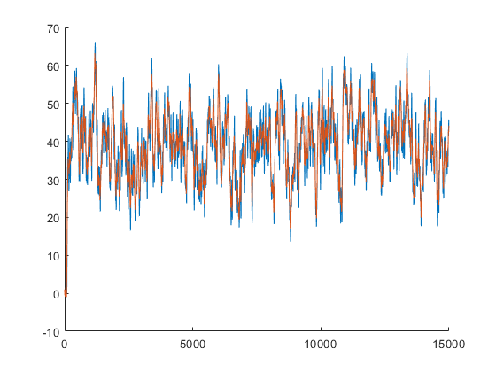
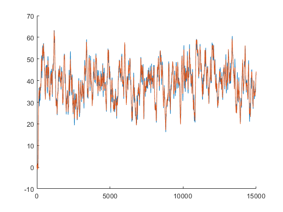

Contents
Trabalho Final Modelagem de sistemas dinâmicos
Limpar Workspace
close all;
clear;
clc;
warning off;
Gerar Arquivos de Entrada
n_amostras = 3000;
degrau = ones(1,n_amostras);
fileID = fopen('degrau.txt','w');
fprintf(fileID,'%6.2f \n',degrau);
fclose(fileID);
prbs = idinput(n_amostras,'prbs',[0 1],[0 1]);
fileID = fopen('prbs.txt','w');
fprintf(fileID,'%6.2f \n',prbs);
fclose(fileID);
Ler dados do Labview
dados_degrau = load('resposta_ao_degrau.txt');
dados_prbs = load('resposta_ao_prbs.txt');
tempo_degrau = dados_degrau(:,1);
entrada_degrau = dados_degrau(:,2);
resposta_degrau = dados_degrau(:,3);
tempo_prbs = dados_prbs (:,1);
entrada_prbs = dados_prbs (:,2);
resposta_prbs = dados_prbs (:,3);
figure()
plot(tempo_degrau, resposta_degrau);
title("Resposta ao degrau");
xlabel("Tempo(s)");
ylabel("Tensão (V)");
grid("on");
figure();
plot(tempo_prbs, resposta_prbs);
title("Resposta ao PRBS");
xlabel("Tempo(s)");
ylabel("Tensão (V)");
grid("on");
 
Cálculo Do Ganho
dy = mean(resposta_degrau(end-50:end));
du = mean(entrada_degrau(end-50:end));
k = dy/du;
fprintf("Ganho K do sistema é: %f v/%% \n", k);
Ganho K do sistema é: 77.784291 v/%
Ex01 A - Método das integrais
dados_normalizados =resposta_degrau/k;
A1 = trapz(tempo_degrau,entrada_degrau - dados_normalizados);
indice = find(tempo_degrau >= A1, 1, 'first' );
A2 = trapz(tempo_degrau(1:indice),dados_normalizados(1:indice));
tau_a = A2*exp(1);
theta_a = A1 - tau_a;
s = tf('s');
Hs_a = (k*exp(-theta_a*s))/(tau_a*s+1);
y_a = step(Hs_a,tempo_degrau);
figure()
hold("on");
plot(tempo_degrau, resposta_degrau);
plot(tempo_degrau, y_a);
title("Resposta método das integrais");
xlabel("Tempo(s)");
ylabel("Tensão (V)");
grid("on");
fprintf("Ganho K: %f v/%% \n", k);
fprintf("Constante de tempo: %f segundos \n", tau_a);
fprintf("tempo morto: %f segundos \n", theta_a);
mse_a = mean((resposta_degrau - y_a).^2);
fprintf("O erro médio quadrático (MSE) é %f\n", mse_a);
Ganho K: 77.784291 v/%
Constante de tempo: 44.406051 segundos
tempo morto: 27.282259 segundos
O erro médio quadrático (MSE) é 7.400825

Ex01 B - Método de um constante de tempo
theta_b = 22;
tau_b = 75 - theta_b;
s = tf('s');
Hs_b = (k*exp(-theta_b*s))/(tau_b*s+1);
y_b = step(Hs_b,tempo_degrau);
figure()
hold("on");
plot(tempo_degrau, resposta_degrau);
plot(tempo_degrau, y_b);
title("Resposta método de uma constante de tempo");
xlabel("Tempo(s)");
ylabel("Tensão (V)");
grid("on");
fprintf("Ganho K: %f v/%% \n", k);
fprintf("Constante de tempo: %f segundos \n", tau_b);
fprintf("tempo morto: %f segundos \n", theta_b);
mse_b = mean((resposta_degrau - y_b).^2);
fprintf("O erro médio quadrático (MSE) é %f\n", mse_b);
Ganho K: 77.784291 v/%
Constante de tempo: 53.000000 segundos
tempo morto: 22.000000 segundos
O erro médio quadrático (MSE) é 7.197866

Ex01 C - Método de Smith
t1 = 43;
t2 = 75;
tau_c = 1.5*(t2-t1);
theta_c = t2-tau_c;
s = tf('s');
Hs_c = (k*exp(-theta_c*s))/(tau_c*s+1);
y_c = step(Hs_c,tempo_degrau);
figure()
hold("on");
plot(tempo_degrau, resposta_degrau);
plot(tempo_degrau, y_c);
title("Resposta método de Smith");
xlabel("Tempo(s)");
ylabel("Tensão (V)");
grid("on");
fprintf("Ganho K: %f v/%% \n", k);
fprintf("Constante de tempo: %f segundos \n", tau_c);
fprintf("tempo morto: %f segundos \n", theta_c);
mse_c = mean((resposta_degrau - y_c).^2);
fprintf("O erro médio quadrático (MSE) é %f\n", mse_c);
Ganho K: 77.784291 v/%
Constante de tempo: 48.000000 segundos
tempo morto: 27.000000 segundos
O erro médio quadrático (MSE) é 6.725565

Ex01 - Conclusão
Ex02 - Método de Sundaresan
t1 = 48;
t2 = 117;
tau_d = 0.67*(t2-t1);
theta_d = 1.3*t1 - 0.29*t2;
s = tf('s');
Hs_d = (k*exp(-theta_d*s))/(tau_d*s+1);
y_d = step(Hs_d,tempo_degrau);
figure()
hold("on");
plot(tempo_degrau, resposta_degrau);
plot(tempo_degrau, y_d);
title("Resposta método de Sundaresan");
xlabel("Tempo(s)");
ylabel("Tensão (V)");
grid("on");
fprintf("Ganho K: %f v/%% \n", k);
fprintf("Constante de tempo: %f segundos \n", tau_d);
fprintf("tempo morto: %f segundos \n", theta_d);
mse_d = mean((resposta_degrau - y_d).^2);
fprintf("O erro médio quadrático (MSE) é %f\n", mse_d);
Ganho K: 77.784291 v/%
Constante de tempo: 46.230000 segundos
tempo morto: 28.470000 segundos
O erro médio quadrático (MSE) é 7.030523
Ex02 - Método de Mollenkamp
y1 = 0.15 * k;
y2 = 0.45 * k;
y3 = 0.75 * k;
indice1 = find(resposta_degrau <= y1, 1, 'last' );
indice2 = find(resposta_degrau <= y2, 1, 'last' );
indice3 = find(resposta_degrau <= y3, 1, 'last' );
t1 = tempo_degrau(indice1);
t2 = tempo_degrau(indice2);
t3 = tempo_degrau(indice3);
x = (t2 - t1)/(t3 - t1);
zeta = (0.0805-5.547*(0.475 - x)^2)/(x - 0.356);
if zeta >= 1
f1 = 2.6*zeta - 0.6;
else
f1 = 0.708*(2.811)^zeta;
end
w = f1/(t3-t1);
f2 = 0.922*(1.66)^zeta;
theta_e = t2 - f2/w;
tau_e1 = (zeta + sqrt(zeta^2 - 1))/w;
tau_e2 = (zeta - sqrt(zeta^2 - 1))/w;
s = tf('s');
Hs_e = k*exp(-theta_e*s)/((tau_e1*s+1)*(tau_e2*s+1));
y_e = step(Hs_e,tempo_degrau);
figure()
hold("on");
plot(tempo_degrau, resposta_degrau);
plot(tempo_degrau, y_e);
title("Resposta método de Mollenkamp");
xlabel("Tempo(s)");
ylabel("Tensão (V)");
grid("on");
fprintf("Ganho K: %f v/%% \n", k);
fprintf("Constante de tempo 1: %f segundos \n", tau_e1);
fprintf("Constante de tempo 2: %f segundos \n", tau_e2);
fprintf("tempo morto: %f segundos \n", theta_e);
mse_e = mean((resposta_degrau - y_e).^2);
fprintf("O erro médio quadrático (MSE) é %f\n", mse_e);
Ganho K: 77.784291 v/%
Constante de tempo 1: 52.656492 segundos
Constante de tempo 2: 7.539855 segundos
tempo morto: 21.397844 segundos
O erro médio quadrático (MSE) é 10.017400
Ex02 - Conclusão
Ex03 - A
y1 = lsim(Hs_a,entrada_prbs,tempo_prbs);
figure();
hold on;
plot(tempo_prbs,y1);
plot(tempo_prbs,resposta_prbs);

Ex3 - B
y2 = lsim(Hs_b,entrada_prbs,tempo_prbs);
figure();
hold on;
plot(tempo_prbs,y2);
plot(tempo_prbs,resposta_prbs);

Ex3 - C
y3 = lsim(Hs_c,entrada_prbs,tempo_prbs);
figure();
hold on;
plot(tempo_prbs,y3);
plot(tempo_prbs,resposta_prbs);

Ex3 - D
y4 = lsim(Hs_d,entrada_prbs,tempo_prbs);
figure();
hold on;
plot(tempo_prbs,y4);
plot(tempo_prbs,resposta_prbs);

Ex3 - E
y5 = lsim(Hs_e,entrada_prbs,tempo_prbs);
figure();
hold on;
plot(tempo_prbs,y5);
plot(tempo_prbs,resposta_prbs);
